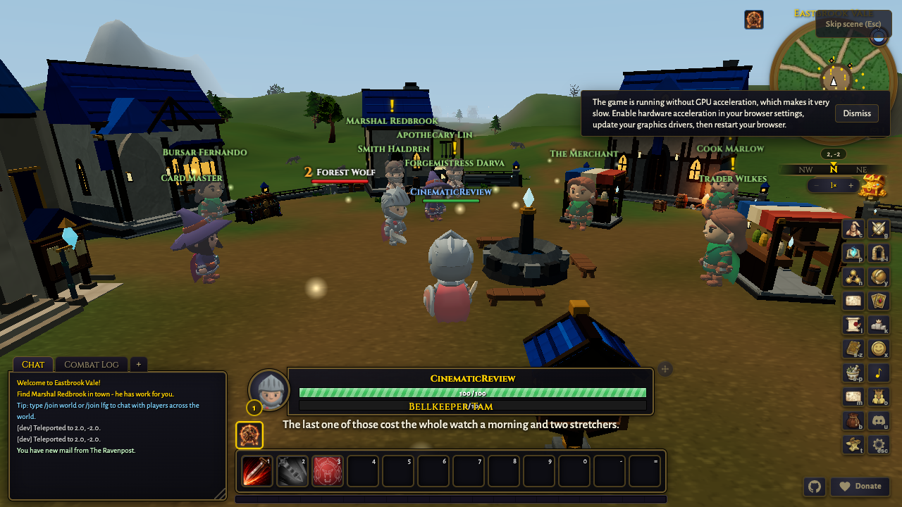
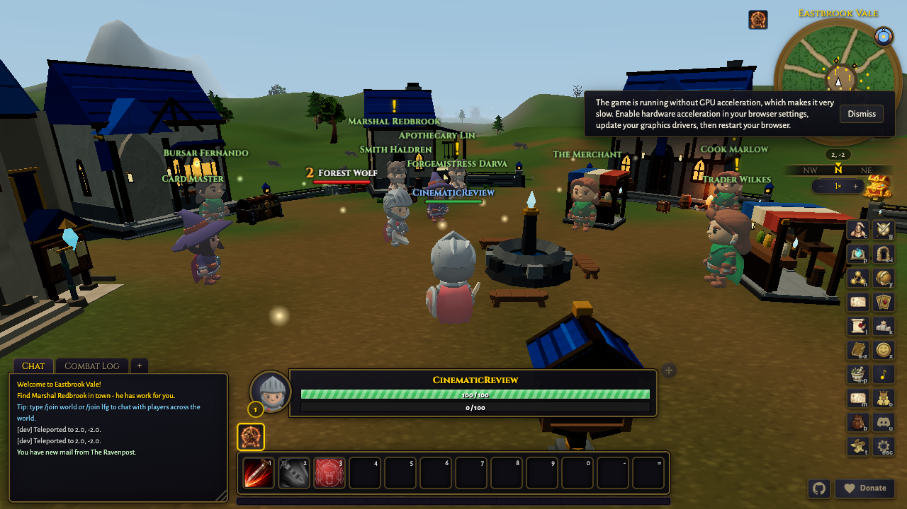

Target 7.5s
Measured 7.55s
Cut window 0s to 15s. scene midpoint
Target 15s
Measured not available
Cut window 15s to 15s. after scene end

Target 16s
Measured not available
Cut window 16s to 16s. HUD restored